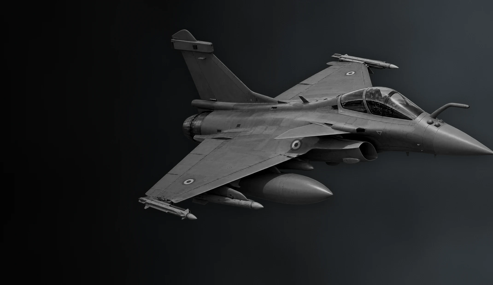

VelocityRL
Private repository
I train Rocket League bots through self-play in RocketSim, where I compare PPO and V-trace.
Rocket League bots, Trackmania simulation and a few experiments on AMD GPUs.
See the work
Private repository
I train Rocket League bots through self-play in RocketSim, where I compare PPO and V-trace.
C++ / Rust
A Trackmania simulator for testing physics, trajectories and racing controllers outside the game.
ZLUDA / HIP
I test which CUDA workloads run on AMD GPUs under Windows and check that the results hold up.

I mainly work in C++, Rust and Python. For bot training and controller tests, simulation lets me compare results without relaunching the game for each run.